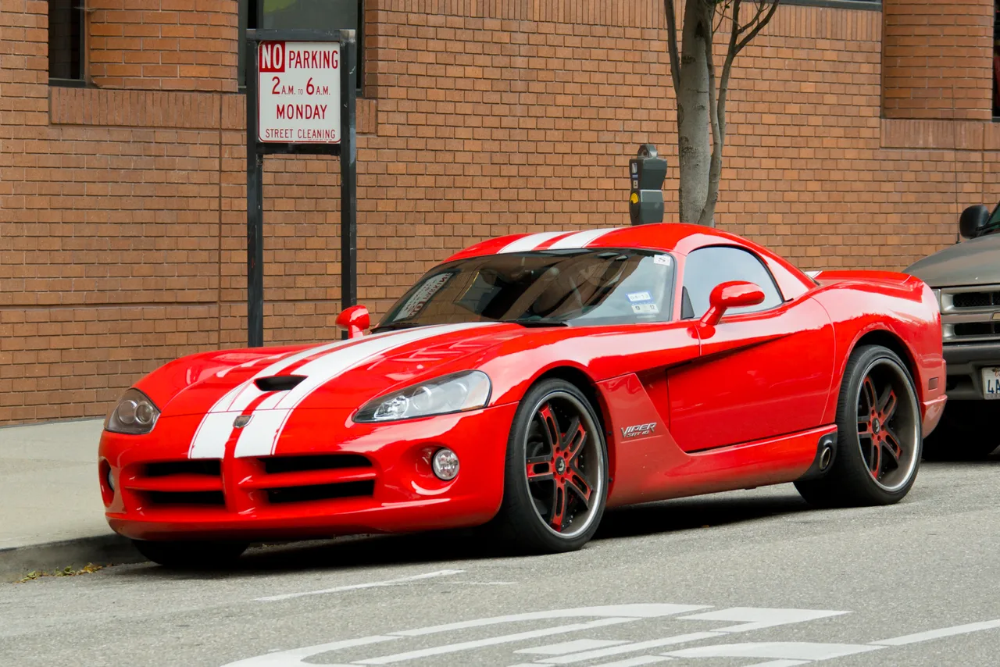

▲ 2017년 단종된 5세대 바이퍼 — 새로운 코퍼헤드는 이 최종 세대 바이퍼의 뒷모습 디자인 요소를 이어받는 것으로 알려졌다
1997년, 다지는 디트로이트 오토쇼에서 '코퍼헤드'라는 이름의 컨셉카를 공개했습니다. 당시 6만 6,000달러에 달했던 바이퍼를 3만 달러대로 저렴하게 만든 '예산형 바이퍼' 콘셉트였습니다. 2000년 양산까지 예정돼 있었지만, 1999년 크라이슬러와 메르세데스-벤츠의 합병으로 프로젝트가 통째로 무산됐습니다. 그로부터 약 30년이 지난 지금, 코퍼헤드라는 이름이 완전히 다른 모습으로 돌아옵니다. 이번에는 저가형이 아니라, SRT 배지를 단 다지의 새로운 플래그십 스포츠카로서입니다.
1. 원조 코퍼헤드 — 왜, 어떻게 사라졌나

▲ 다지 바이퍼 — 1990년대 6만 6,000달러에 달했던 이 차의 저가형 버전으로 코퍼헤드가 기획됐다
1997년 컨셉카로 공개된 원조 코퍼헤드는 바이퍼의 섀시를 그대로 가져다 쓰면서도, 2.7L 자연흡기 V6 엔진(220마력)과 5단 수동변속기, 후륜구동이라는 훨씬 소박한 구성으로 3만 달러대 가격을 노렸습니다. 2000년 양산이 예정돼 있었지만, 1999년 크라이슬러와 메르세데스-벤츠의 합병이 성사되면서 상황이 바뀌었습니다. 메르세데스 SLK를 기반으로 개발된 크라이슬러 크로스파이어가 사실상 같은 시장을 겨냥하게 되면서, 코퍼헤드 프로젝트는 그대로 폐기됐습니다.
2. 새 코퍼헤드 — "바이퍼가 아니기 때문에" 코퍼헤드
2026년 스텔란티스 인베스터 데이에서, 회사는 5개년 제품 로드맵의 일환으로 코퍼헤드라는 이름의 새로운 SRT 스포츠카를 비공개로 공개했습니다. 로우 슬렁 2도어 쿠페 형태에 공격적인 에어로 파츠, 후드 스쿠프, 우뚝 솟은 대형 리어 윙까지 갖춘 모습으로, 현행 차저의 앞모습과 마지막 세대 바이퍼의 뒷모습을 섞어놓은 듯한 디자인이라는 평가를 받았습니다. SRT 총괄 팀 쿠니스키스는 "우리가 이 차를 코퍼헤드라고 부르기로 한 건, 이 차가 바이퍼가 아니기 때문"이라고 밝혔습니다. 이름부터 원조 바이퍼의 후속이 아니라는 점을 명확히 한 셈입니다.
3. 엔진일까, 전기모터일까 — 아직 열려있는 파워트레인

▲ 다지 차저 데이토나 — 코퍼헤드가 전동화될 경우, 이미 전기 머슬카를 양산 중인 차저 데이토나의 파워트레인 기술이 활용될 가능성이 있다
가장 관심을 모으는 대목은 파워트레인입니다. 일부 매체는 허리케인 4기통이나 직렬 6기통, 혹은 자연흡기·슈퍼차저 V8까지 다양한 조합이 검토되고 있다고 보도했습니다. 반면 팀 쿠니스키스는 인터뷰에서 완전히 새로운 방식, 즉 "전기식일 수도 있다"는 뉘앙스를 남겼습니다. 다지는 이미 차저 데이토나를 통해 배기음을 인공적으로 구현한 전기 머슬카를 양산 중인 만큼, 코퍼헤드가 이 기술 계보를 잇는 순수 전기 혹은 전동화 하이브리드로 나올 가능성도 배제할 수 없는 상황입니다. 다만 공식적으로 확정된 사양은 아직 없습니다.
4. 왜 콜벳의 라이벌로 지목되나

▲ 쉐보레 콜벳 C8 — 코퍼헤드는 이 미국산 스포츠카의 자리를 정면으로 겨냥할 대항마로 거론된다
코퍼헤드가 콜벳의 라이벌로 지목되는 이유는 명확합니다. 미국에서 미드엔진 혹은 프론트엔진 구성의 순수 2도어 스포츠카로서 대량 양산되는 모델 자체가 사실상 콜벳이 거의 유일했기 때문입니다. 원조 코퍼헤드가 당시 콜벳(C5)의 3만 달러대 가격보다 저렴한 가격을 노렸던 전례를 감안하면, 이번 신형 역시 콜벳과 정면으로 겹치는 가격대·포지셔닝을 노릴 가능성이 거론됩니다. 다만 아직 공식 가격이나 정확한 스펙이 나오지 않은 만큼, '콜벳을 잡는다'는 표현은 현재로선 기대 섞인 전망에 가깝습니다.
5. 언제 만날 수 있나 — 아직 먼 이야기
30년 전 합병이라는 외부 변수로 무산됐던 프로젝트가, 이름만 남긴 채 완전히 다른 차로 부활하는 셈입니다. 정확한 실체가 드러나기까지는 시간이 걸리겠지만, '바이퍼는 아니지만 바이퍼의 그림자를 진 차'라는 코퍼헤드의 정체성이 어떻게 완성될지 지켜볼 대목입니다.